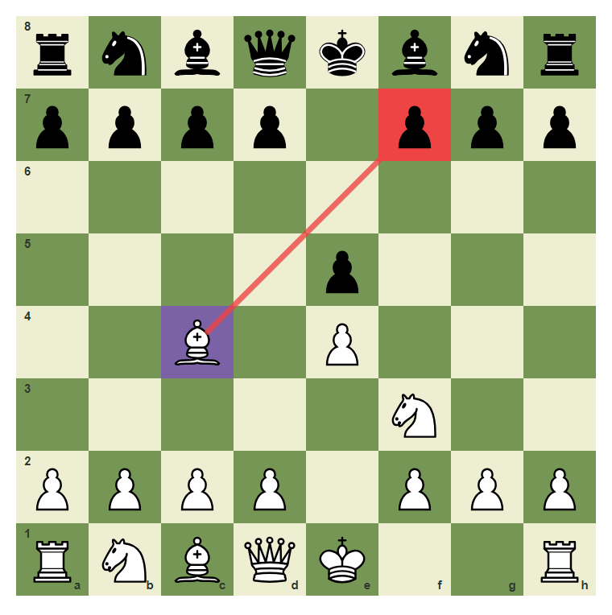
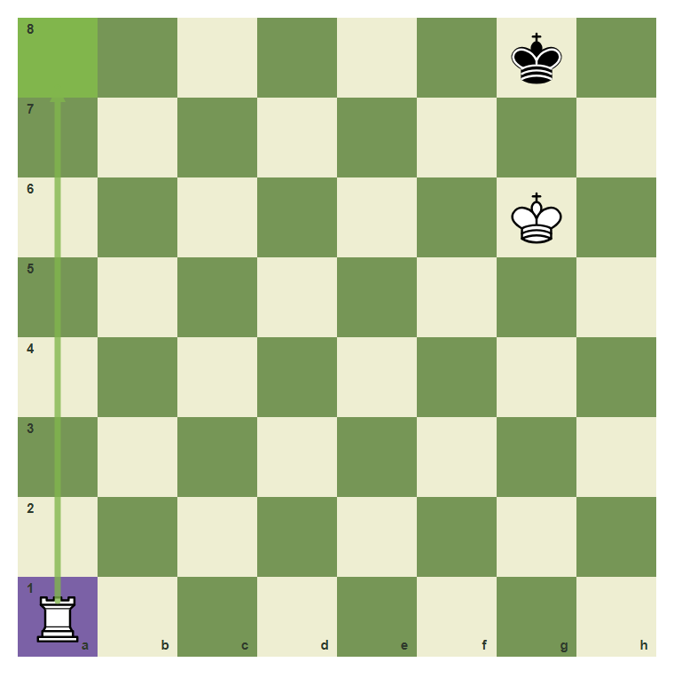
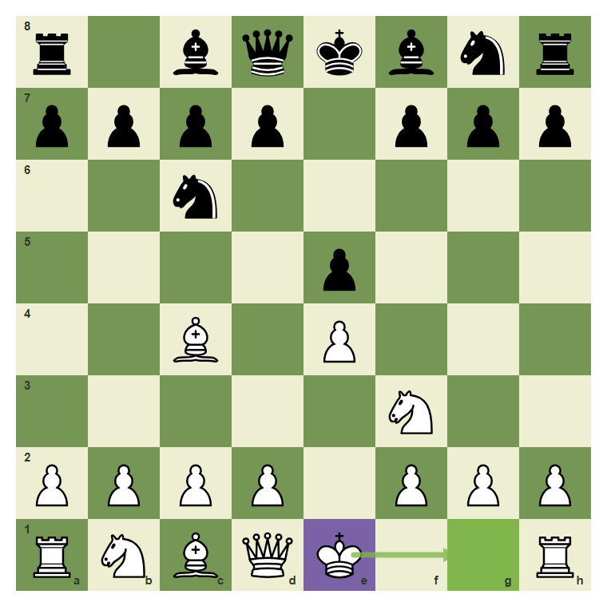

Ten Survival Games: Find The Safe Move
Apply the survival checklist in miniature game moments.
- Use CCT in mixed positions.
- Choose safety over impulse.
- Convert advantages without stalemate or loose pieces.
Put The Habits Together
This final chapter mixes the whole book. Each position asks for the safest practical move, not the flashiest move.
Game moment: forcing check

The CCT scan still begins with the check on f7.
Game moment: loose knight

The knight on e5 can be captured after the scan.
Game moment: defend e4

The move b1-c3 develops and defends.
Game moment: castle when ready

Castling is a survival move when the path is clear.
Game moment: finish cleanly

A won rook ending still needs the final mating check.
Find the safe game move
The king is ready. Castle from e1 to g1.

Common mistake: skip the survival checklist
In a real game, a safe developing or castling move often beats a pawn grab.

The safe arrow goes from e1 to g1.
Chapter Checkpoint
In mixed positions, start with:
In mixed positions, start with:
A safe practical move can be:
A safe practical move can be:
The goal of Survival Chess is to:
The goal of Survival Chess is to: